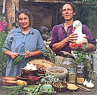
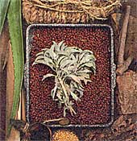
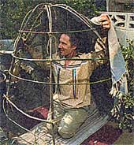
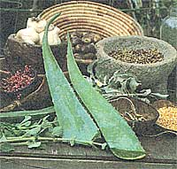
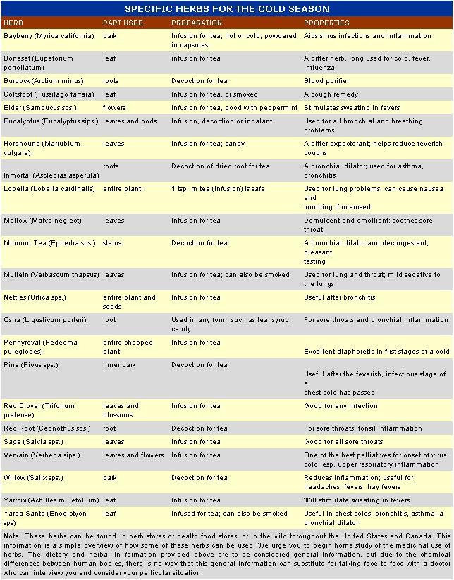

Natural Health
Finding a way out of the prescriptions and pitfalls of the health care system. By Christopher and Dolores Lynn Nyerges
Everyone wants good health. But what exactly is it? Is good health merely the absence of disease? Is good health hereditary, something we are born with, or is it something that we create for ourselves, a way of life?
As MOTHER readers have discovered over the past 27 years, it is a serious mistake to accept the notion that health is something we simply obtain in exchange for visits to the medical doctor. But hundreds of billions of dollars of government Medicare and Medicaid given exclusively to traditional medical practitioners is legislating that if we seek solutions elsewhere, we will do it alone.
People in the United States are faced with a dilemma today. The State has given itself the power to mandate conventional medical care, in particular as it applies to children. At the same time, at least 80,000 deaths each year are attributed to poorly administered medical care, according to Harvard Medical School research cited in the enlightening book The Great White Lie by Walt Bogdanich (Simon & Schuster, 1991).
The essence of the MediCult, the modern cult of medicine, is the idea that patients are cured with drugs and/or surgery and that everything else is superfluous. It is a rare doctor who tells you about nutrition or any of the other alternative health procedures that have proven efficacious over countless centuries.
So what should we do? How do we steer our society towards a more enlightened future? The answer lies in small but critical decisions we make every day. We can either buy and prescribe what we need to be healthy or we can think of the root causes of our illnesses and help to cure them naturally. Ultimately, our daily decisions may prevent illness from latching on to us in the first place.
Let's start from the beginning. We'll assume that illnesses-the symptoms-are a result of very specific causes. Modern medicine focuses upon eliminating symp toms, and rarely upon identifying and altering the underlying causes of illness. A system of "healing" that is primarily focused upon elimination of symptoms provides us with a remarkably narrow perspective of health and healing. What we eat and drink, what we breathe, what we think about, and how we behave towards others-all of these integral components of our daily lives can and do have very physical ramifications.
J oseph Nemeth of Fort Collins, Colorado, made some noteworthy observations in the September 1989 Mensa Bulletin (Mensa is the international high IQ society). "Occasionally," he writes, "we need to be reminded how very peculiar and unbalanced our mainstream concept of medicine is. First, we are all mortal and will die regardless of the efforts of any practitioner of any brand of medicine. Second, we forget that no physician has ever healed anyone-the physician merely stabilizes the body or mind in a crisis, allowing the body or mind to heal itself. Because we hold the physician responsible for the healing, we split physicians into two camps-the real doctors and the quacks-and identify the former with medical conservatism and the latter with anything else. This leads to comments like 'raising false hopes,' in spite of the fact that all hopes are false in the long term, while in the short term hope itself may be the most important factor in healing."
"Spontaneous remission is a well-documented category of healing which baffles physicians. If there are any reproducible factors associated with spontaneous remission, they appear to lie in the areas of faith healing, prayer, laying-on of hands, meditation, and other sources of `false hope: Who is going to perform the rigorous studies to test these instances, if not parapsychologists? How many conservative physicians or medical researchers are going to put their reputation and future livelihood on the line by really studying this 'crank medicine'?"
Occasionally a student will ask us: "Aren't you worried about getting poison oak?" They may also ask if we're worried about tics, snakes, or any of the other things we could encounter in the outdoors. I respond that, no, I am not worried, since worry is bad for the heart and is known to actually in crease the body's cholesterol level, thicken the arteries, and increase blood pressure. The point isn't to be flip, since neat I tell the students how to deal with poison oak, tics, whatever. The point is to not worry.
Worry, hate, anxiety, fear-these and other negative emotions are bad for our health. Though the subject of emotions is vast, it is known that hate causes, among other things, excess hydrochloric acid to be secreted in the stomach, and fear causes, among other things, an excess flow of adrenaline that weakens the kidneys.
Are there viable alternatives to fear, hate, and worry? Yes, definitely. But you must first choose them. We must emphasize that we are not referring to some sort of positive thinking where we affirm things to be so when they are not; rather, we're talking about retraining our brain so we don't continue to allow our thinking and emoting to result in sickness and disease.
For example, according to the PBS series Psychology, a study done on soldiers showed that those who met problems optimistically, as challenges to be handled, were the most "mentally healthy." Mental and physical health are profoundly interdependent. An excellent book to study on the subject is Thinking and Destiny by Harold Percival (The Word Foundation, 1946).
To say that the cause of disease or sickness is in our mind is not to imply that it is therefore not real. However, the power of our mind can be used to both create sickness and to promote health. More often than not, we do this without knowing it. For example, numerous tests have been done with patients who were given placebo pills. After a pill was administered, the test subjects overwhelmingly responded as they believed they should. We have conditioned our minds to expect a certain physical response once we ingest a pill, and we very well may get the expected response whether the pill is a drug or a placebo.
Just as our bodies respond to pills and placebos, we also have measurable physical responses to grief and to kindness. A 1983 study done by Mount Sinai School of Medicine in New York showed that men whose wives had died experienced a significant decline in the activity of lymphocytes, white blood cells involved in the body's disease-fighting system. An estimated 700,000 Americans over 50 lose their spouses each year, and about 7,000 deaths a year are attributed to bereavement. Do you know someone whose spouse has recently died? Call them every day for a week or more and let them know someone still cares.
Knowing someone cares makes you feel better. Here's another example: Psychologist David McClelland spent several months studying the responses of Harvard students to viewing scenes such as Mother Teresa of Calcutta working among India's poor. McClelland measured a sharp increase in the Immunoglobulin-A (IgA) content in the saliva of the students who had just viewed the films. IgA is our immune system's fist line of defense against upper respiratory infections. It works by killing viruses.
McClelland also discovered that healers who cheer up people and make them feel better about themselves invariably raise the IgA level of the patients. This, according to McClelland, is one factor that contributes to the healing that takes place.
A sense of well-being is also connected to the creative and productive things we are doing in our lives. It is an ancient idea, known in Eastern religions as "doing one's dharma" or "right livelihood:" Finding those life pursuits that are optimally fitting for us and living in accord with them will do more for basic health than anything.
We could say that breath (not bread) is the staff of life. If so, then a great many of us are starving to death. In urban areas, there is less oxygen and more smog. Many of us are also stranded in office spaces with recycled air. If you live in a city, it is imperative to have some sort of breathing exercise you do daily. This could be something as simple as jogging, bicycling, sit-ups, calisthenics, or any other routine that forces you to breathe vigorously. This kind of exercise will not only result in better breathing, but also in flexibility, healthier heart activity, lower cholesterol levels, and toxin release through sweating.
We have also learned in recent years about endorphins, which are pain deadening, euphoria-producing substances the brain naturally produces or releases during times of heavy stress. The reaction to endorphins is sometimes described as the "athlete's natural high." The flow of endorphins helps athletes perform during times of high-stress competition. Which leads us to-you may have guessed it at this point...
Believe it or not, the skin is the largest organ of your body. For the average adult, the skin weighs about six pounds and covers a total area of more than 18 square feet. The skin is an excretory organ, and pores needs to be open and breathing for optimum health. Sweating brings sodium chloride and the waste products lactic acid and urea to the surface of the skin for elimination. For most of us, the outer layer of skin is actually a thin layer of water-proof dead skin cells. Huge populations of bacteria and other microorganisms inhabit the skin. New skin cells are constantly moving up as the old cells are shed. The skin surface regenerates itself entirely about once a month, and we can aid this process by being certain that we keep the skin scrubbed and clean.
Researchers at the College of Physicians and Surgeons, Columbia University, discovered in a 1985 study that the epidermis actually makes an important contribution to the body's defense against disease. It turns out that some white blood cells, called helper T cells, are processed in the epidermis rather than in the thymus, where all white cells were thought to undergo processing. Helper T cells then trigger another class of white cells-B cells-which produce antibodies against specific antigens which are foreign substances such as viruses, bacteria, and other microorganisms.
This is part of the reason why it's important to avoid oily soaps that clog the pores, and choose those that are alcohol based, such as Shaklee's Basic H, Ivory dish washing liquid, Dawn Free, etc.
When you scan most Sunday newspapers, you find ads for a large number of substances which are designed to be put on our skin: powders, deodorants, softeners, cleaners, makeup, acne hiders and healers: all manner of pore-cloggers. Virtually none of these products is necessary. Most are not good for us. Some are outright dangerous. The bottom line is: your pores need to breathe. Your pores need to excrete. Toxins in our bodies do get out one way or another, and many of our illnesses are body-cleansing processes.
Ancient cultures that experienced a high degree of spiritual development all maintained some form of ablutions, which include such things as ritual washing, saunas, hot springs, and the sweat lodge.
What are ablutions? Though there are many variations, we have been taught a system that can be done in one's own bathtub. It simply involves bathing in the hottest water you can tolerate and then scrubbing the entire skin surface while breathing as deeply as possible. This is not only very cleansing, but can be comforting and curative if you are fighting illness.
The sweat lodge as originally passed down by the Lakota Sioux is part of their most sacred rituals. The best description of how to build and use a sweat lodge can be found in The Indian Tipi by Reginald and Gladys Laubin (University of Oklahoma Press, 1957).
We've built one in our backyard, and we use the sweat lodge whenever we feel a cold is coming on. Essentially, the sweat lodge has a semi-circular shape and a framework built from willow branches. This is covered with sheets, tarps, or carpets, in order to make it dark and airtight inside. We heat rocks in the backyard fire for about two hours, and then shovel them into a spot inside the sweat lodge. We close the door and then slowly sprinkle water onto the hot rocks. They sizzle and release their intensely hot steam, and we sweat profusely. Though different people use many methods, we typically go in for just one session, make it as hot as we can stand, stay in about 45 minutes, and rinse off with cold water when we exit.
Many mental and physical illnesses can be traced back to physiological deficiencies, such as vitamin B depletion. One proximate cause is drinking alcohol and smoking. If you absolutely must smoke and/or drink, be sure to include daily nutritional yeast, other B-supplements, or high vitamin B foods in your diet. Suggested reading is Adele Davis's Let's Eat Right To Keep Fit (Harcourt, Brace, and Co., 1954).
Our diet often makes us sick. Unless you are able to grow virtually all your own food or have access to fine organic markets and the money to shop in them, you should question the nutritional value of the food you eat. You may not be getting all the vitamins and minerals that your body needs. At the very least, you should take a vitamin and mineral supplement daily. But watch out for dyes and additives in your vitamins.
One of the proximate causes of the illnesses afflicting our bodies is the way we prepare our food. Fried food is not good. The overheated oils-and the wrong kinds of oils-are bad for our arteries, heart, and pores. The same is true for other foods cooked at temperatures above 250°F. A great many vitamins, among them vitamin C, are destroyed at these temperatures, and the tradition of boiling corn, broccoli, potatoes, and soups for hours on end will effectively reduce their nutritional value to calorie content alone.
As much as possible, obtain your food organically grown, and consume as much of it as raw as possible. You should try making some of your own juices, using raw fruits and vegetables and wild foods.
Maintaining good health on a daily basis should be your goal, but sometimes you want a substance to help you deal with the immediate symptoms. There are many alternatives to pills. Here are some.
Vinegar -We use only raw apple cider vinegar. We have used it externally on insect bites, and we routinely add about a tablespoon to each quart of drinking water. Vinegar water helps you deal with heat and stress much better. It affects the hypothalamus, which affects the body's cooling system. Before camping trips, we drink as much vinegar water as possible and we find that we get much less bothered by mosquitoes. Whole books have been written about the healthful uses of vinegar, such as Folk Medicine by D. C. Jarvis, M.D. (Holt, Rinehart and Winston, 1946).
Garlic -Adding garlic and onions to your diet is a delicious way to eat your medicine. According to many studies, garlic reduces cholesterol levels. Other studies have shown that garlic, and other members of this family, such as onions, are effective in reducing high blood pressure, preventing heart attacks, strokes, and flu, and even in protecting the body from certain urban pollutants. Numerous helpful chemicals such as allicin, an antibacterial substance, and selenium have been identified in garlic. To take advantage of garlic's many virtues, simply eat it.
Raw Honey -Honey is a great addition to your wilderness first aid kit. It doesn't just make campfire coffee drinkable. Various studies have shown that raw honey, applied topically to open wounds, causes wounds to heal faster than the wounds of control subjects. Additionally, infections were less likely to occur when honey was applied. Researchers reported in the American Journal of Surgery that these results were due to honey's hygroscopic, bactericidal, and energy-producing properties. But be sure to get raw honey, not the boiled or pasteurized kind.
Aloe Vera -Aloe vera has long been used as a safe and quick method to treat such skin problems as sunburn, poison oak rash, stove burns, cuts, scratches, and diaper rashes. It's a great first-aid plant to grow in your kitchen or yard since it is so versatile.
Researchers have also found numerous beneficial qualities to consuming aloe beverages, which is why you can buy aloe drinks in most health food stores. One benefit of aloe is that it is very cooling to the entire system, according to Dr. David Frawley, a specialist in natural healing. He suggests drinking a teaspoon or two of aloe vera gel before meals and before bed. Pre-bedtime ingestion has long been recommended for women for the alleviation of the symptoms of menopause.
Wild Foods -Some common wild foods that are veritable vitamin and mineral tablets include dandelion, curly dock, lamb's quarters, and purslane. Data from the USDA shows that all of these are extremely rich in vitamins and minerals.
One of the richest non-meat or dairy sources of calcium is carob pods, which are grown as ornamental street trees throughout much of the West, South, and Southwest United States. Pound per pound, carob contains about three times as much calcium as milk.
Bay Leaf -Do you suffer from indigestion after meals? Perhaps you ate too quickly. Perhaps you combined the wrong foods. Obviously, you should correct those behavior patterns, but now, in this moment, how should you deal with the pain? Rather than reach for Alka-Seltzer, try a cup of bay leaf tea.
Hot Peppers -During the winter months when Christopher experiences a cold or the onset of a flu, he has found that a few things can quickly snap him out of it. These include vigorous exercise, an extremely hot bath or sweat lodge, or a bowl of jalapeno peppers. Jalapeno's are very hot, so he'll cook up an egg or toast so he has something to eat the peppers with. His mouth will burn, his whole body will sweat, including his scalp, and he'll eventually begin to feel better. Jalapeno peppers have become a staple in our home as a result.
Sage -Herbalists regard sage as one of the best overall herbs for the nervous system. A weakened nervous system is at the root of many illnesses and diseases. Sage makes a tasty tea that you can drink daily after meals, or when you're not feeling so well. Though it is an excellent tea for colds and flu, you can use it all the time and you can even add the leaves to bath water. Dried sage also makes some of the best incense we have ever tried. Many western American Indians used to wrap sage and other herbs into "smudge sticks." When burned, the incense was said to ward off evil spirits and encourage well-being.
Cactus -The young pads of the prickly pear cactus have been used for centuries in Mexico. Researchers have recently proven what has long been conventional wisdom in Mexico: eating the prickly pear pads in salads, omelet's, stews, soups, and drinks is one possible way to control or cure adult-onset diabetes. And the sweet prickly pear fruit, the closest thing to a watermelon we have ever been able to find in the wild, has been shown to be effective in preventing prostate enlargement and urinary tract infections.
Herbs -The chart below is a list of some of our preferred herbal remedies to combat colds and flus. They range from mild teas used to simply calm the nervous system to remedies intended to fight specific infections.
Water -We've all heard that ninety percent of our bodies is water. You are losing fluids at this very moment without even realizing it. You might be surprised how much more efficiently and happily you function when you are well-hydrated. Headaches, digestive problems, and overall sluggishness result from common dehydration. Try to keep filtered water by your side. Here is how you tell if you are properly hydrated: your urine should be nearly clear.
Chewing -As a final point on eating, it's important to recall-though the fast- food mentality that we are bombarded with suggests that we shouldn't-that digestion begins in the mouth. Chewing causes the ptyalin in saliva to begin digesting the food. Thorough chewing will reduce strain on the digestive system, preventing health problems.
Fasting -Sometimes it's not what we do that's important, but what we don't do. Guess what? You will survive if you skip a few meals each week. In fact, you can skip eating at least a day each week or month, and you'll not only survive, but you'll be doing your body a favor. Fasting gives your body and mind a rest and a cleansing.
Many people consider it a way to increase endurance, extend fife, and increase overall well-being. When we don't eat, we still drink, usually water or fruit juices. After you've fasted for a day here and a day there, you'll find that the only pain is psychological: you're breaking your routine.
But you should know what you're doing when you set out to internally cleanse your body. We're not talking about crash diets here. For good instruction on fasting we recommend reading Are You Confused? by Paavo Airola, Ph.D. (Healthplus, 1971).
Christopher and Dolores Lynn Nyerges teach classes in self-reliance, uses of wild herbs, and wild-food processing through their School of self-Reliance. The schedule of their classes is available from them at Box 41834, Eagle Rock, CA 90041, or on-line at http://home.earthlink.net/~nyerges/.
|
 PHOTOS: ROBIN THOMAS Wild sage tea is one of the most effective cold and flu remedies we have. |
 Feel a cold coming on? Two hours in a home-built sweat lodge will help you fight the infection. |
 Whether you take it externally a internally, aloe is a potent remedy. |
|
 |
 |
|